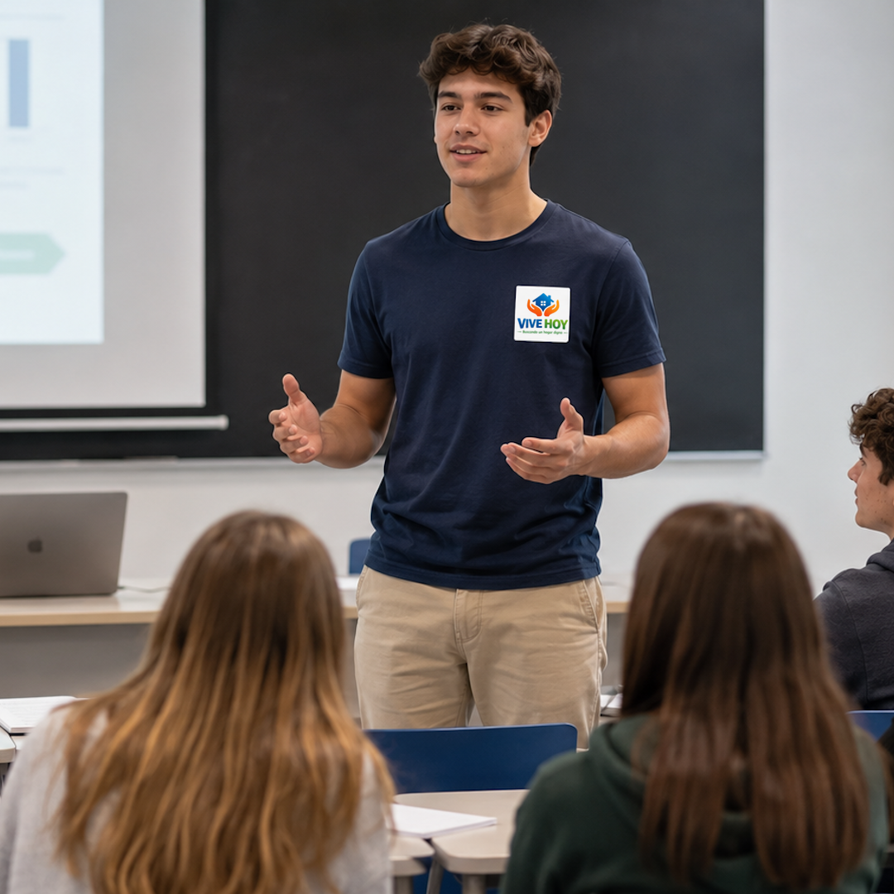
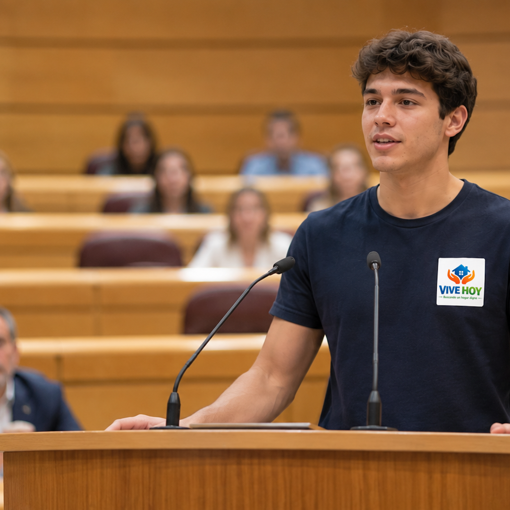
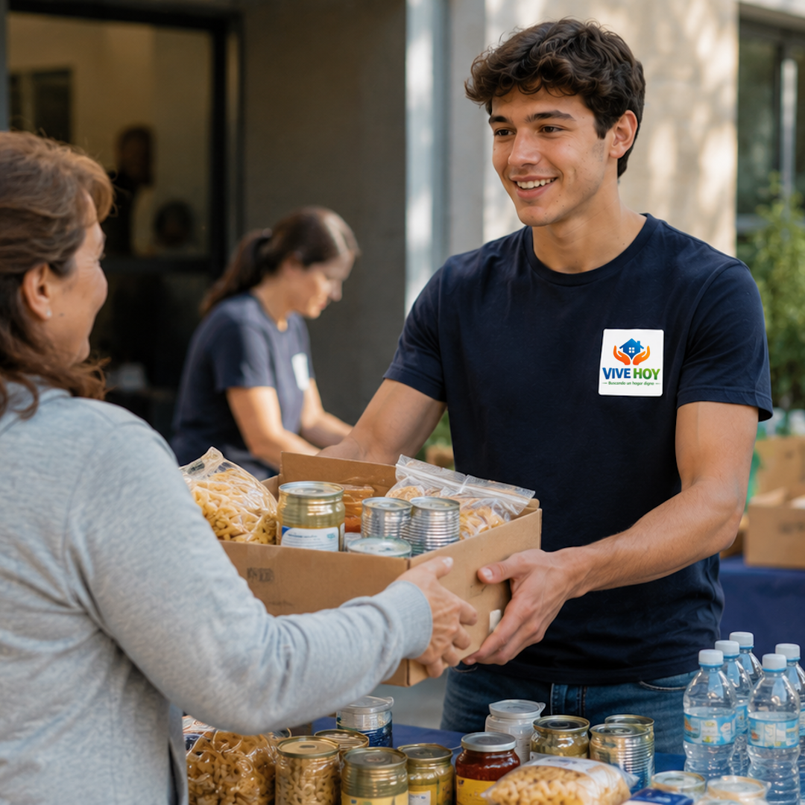
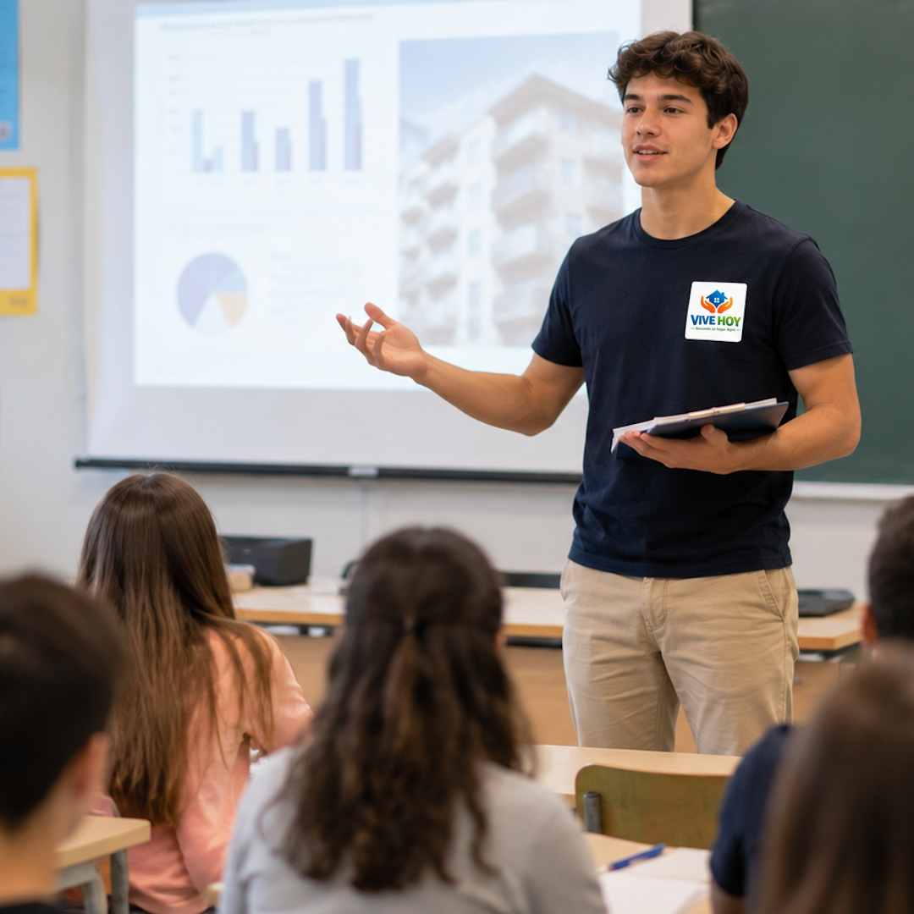
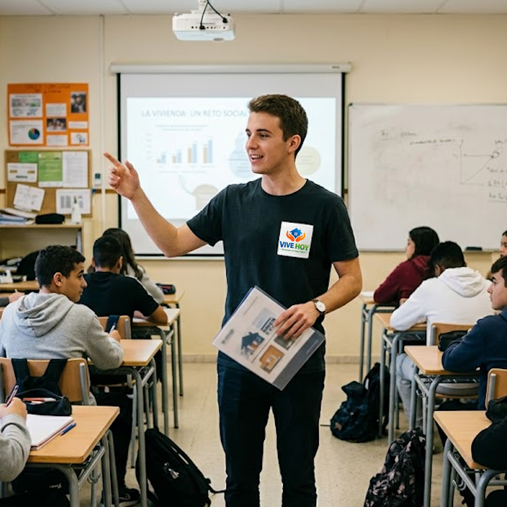
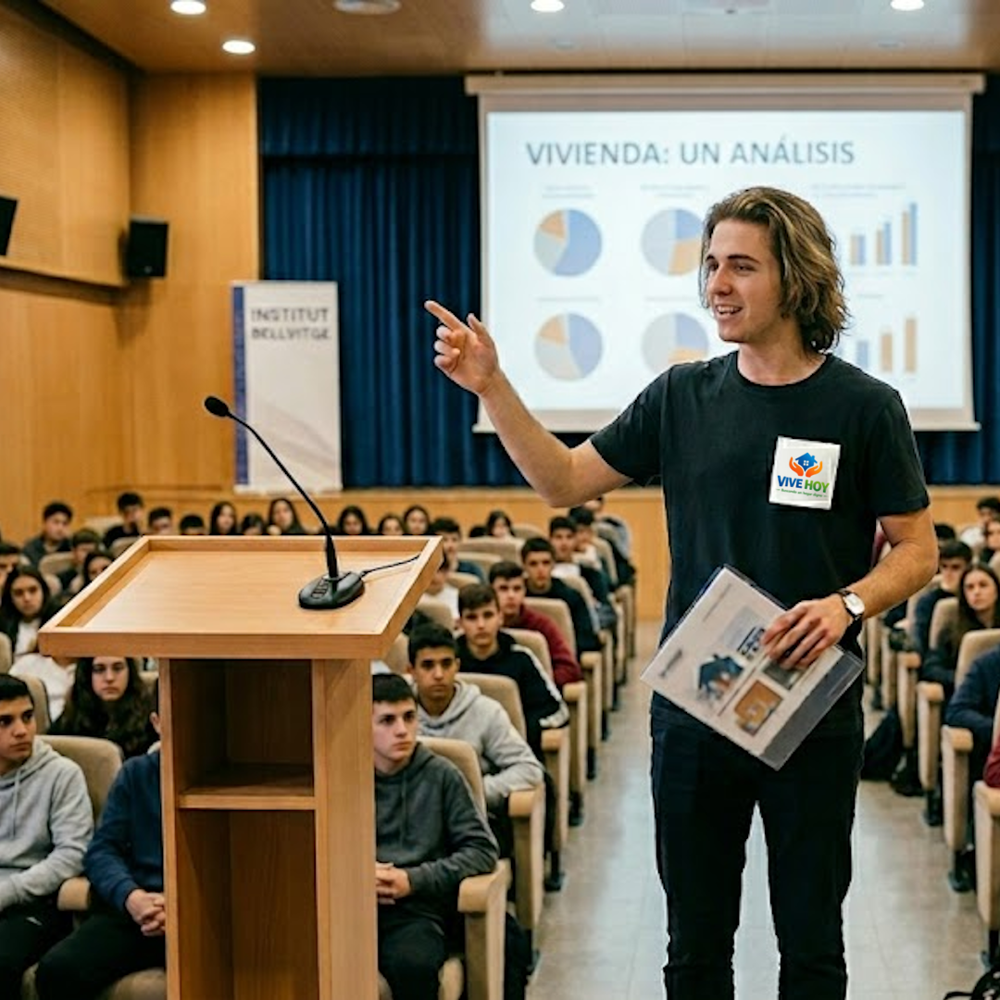
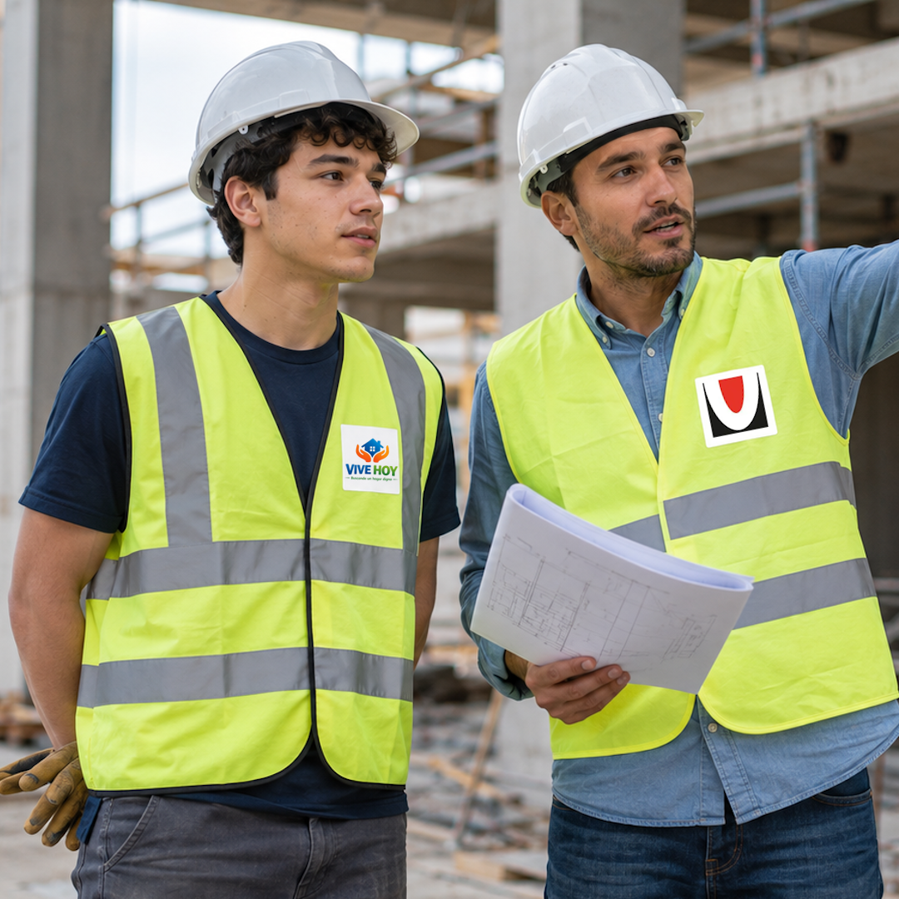
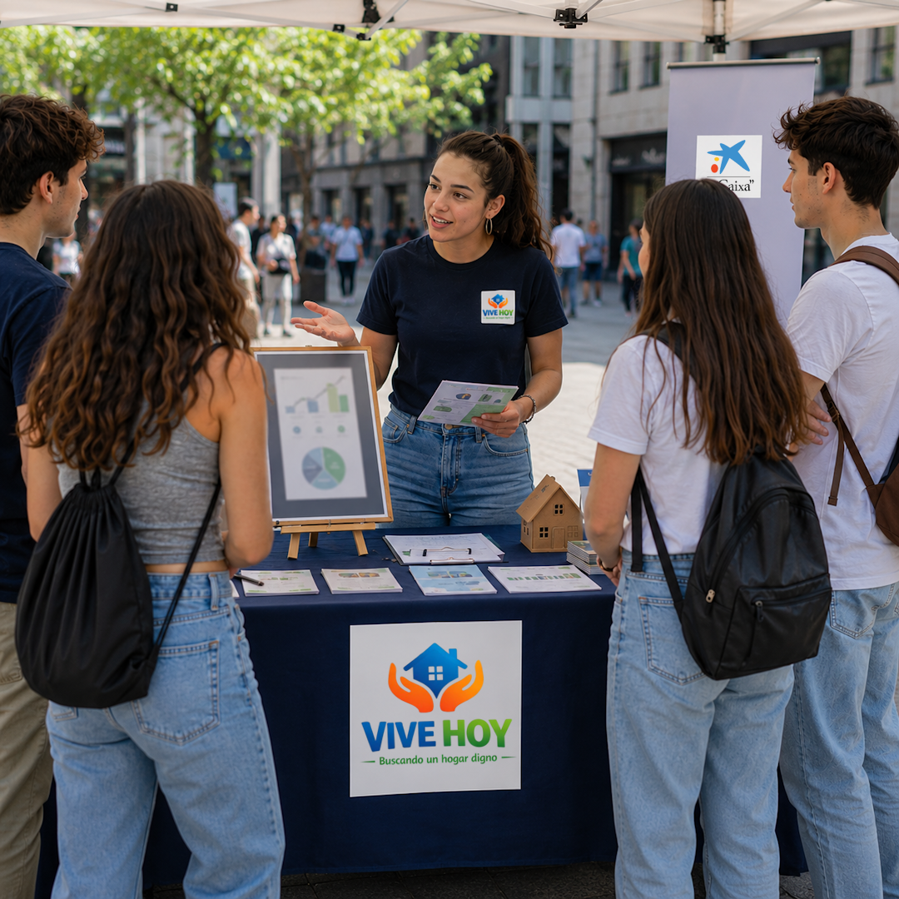
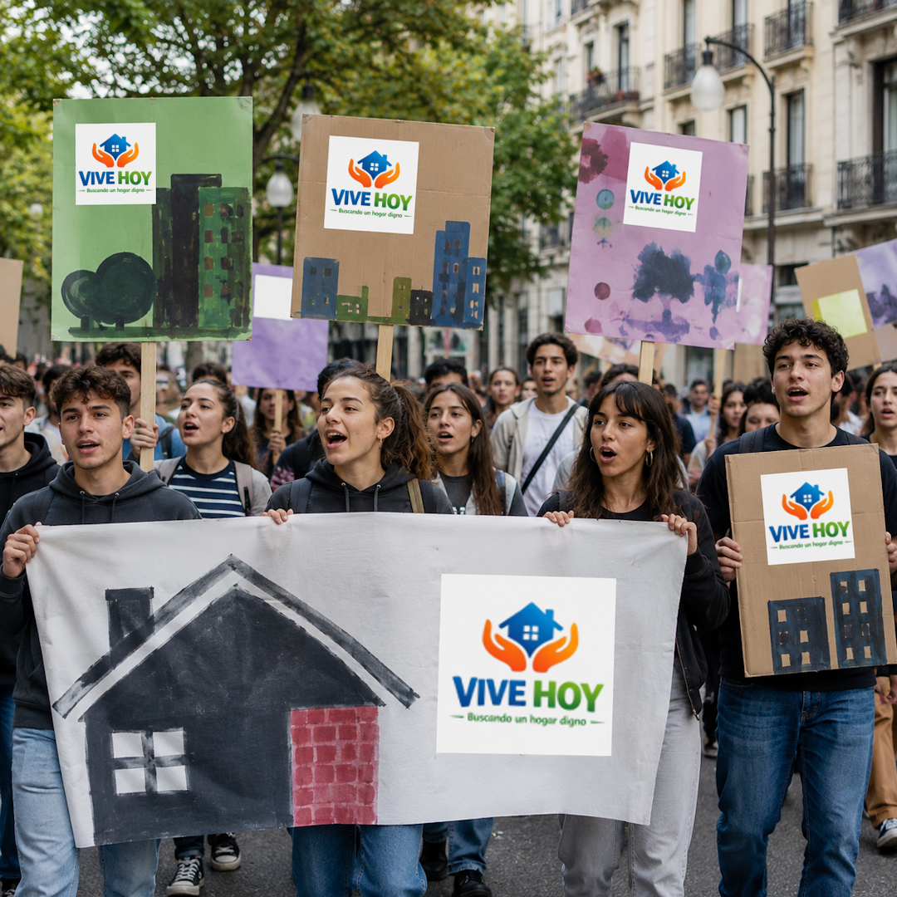

Projectes

Xerrada a l'institut Jesuïtes Bellvitge - Joan XXIII
Xerrada a l'institut Jesuïtes Bellvitge - Joan XXIII als alumnes d'Administració i Direcció d'Empreses (ADE) sobre l'allotjament jove i el dret a un habitatge digne.

Presència al Parlament de Catalunya
Vam anar al Parlament de Catalunya a crear consciència entre els polítics parlamentaris i testimonis presents sobre el problema de l'habitatge actual i la dificultat per a la gent jove per accedir-hi.

Recollida de fons en col·laboració amb l'ONG "La Vinya"
Recollida d'aliments i donacions amb l'objectiu d'ajudar a les persones sense llar.

Xerrada a l'institut Abat Oliba i Loreto.
Es va fer una xerrada a l'institut Abat Oliba i Loreto als alumnes de 4t de la E.S.O., 1r i 2n de Batxillerat sobre l'allotjament jove i el dret a un habitatge digne.

Classe d'orientació financera al Centre Educatiu Esclat.
Es va fer una classe d'orientació financera als alumnes del Centre Educatiu Esclat sobre l'allotjament jove, el dret a un habitatge digne i la gestió de les finances personals.

Xerrada a INS Bellvitge
Xerrada a l'institut INS Bellvitge als alumnes de 4t de la E.S.O., 1r i 2n de Batxillerat sobre l'allotjament jove i el dret a un habitatge digne.

Presència a la construcció de nous habitatges a La Florida.
Assistim a la inauguració d'uns nous habitatges a La Florida, en col·laboració amb la PAH, per visibilitzar i denunciar la falta d'habitatge social a la ciutat.

Acte orientatiu en col·laboració amb La Caixa
Acte orientatiu al passeig de Bellvitge en col·laboració amb La Caixa i el Comitè Espanyol de les eines sobre l'allotjament jove i el dret a un habitatge digne.

Convocatòria de vagues i manifestacions per solucions a la crisi habitacional.
Des del 2018, hem convocat vagues i manifestacions per exigir solucions a la crisi habitacional. Amb la col·laboració de la PAH, hem organitzat accions per visibilitzar i denunciar la falta d'habitatge social a la ciutat.